flowchart LR
A[prepare] ==> B("<em><b>GlobalSetup</b></em>")
B ==> C("<em><b>Warmup</b></em>")
C ==> D[["🔁<em><b>Iteration</b></em>"]]
E1 --erroneous<br/>execution--x X[/"<em>Outliner</em><br/>❌"/]
D ===> F("<em><b>GlobalCleanup</b></em>")
F ==> G((("collect result<br/>📈")))
D -.-> E1(["<em><b>Invocation</b></em><br/>(measure time🕥)"])
E1 -.-> D
BenchmarkDotNET
科學化 .NET 應用效能調校
老鮑伯
Agenda
- BenchmarkDotNET 入門
- 多種 C＃ 開發應用場景
(ASP.NET Core Web API/gRPC/Orleans, Blazor, ONNX Runtime, MAUI, WPF, Godot Game Engine)
使用 BenchmarkDotNET - 整合 BenchmarkDotNET 到 GitHub Action CI
Slide URL
BenchmarkDotNET 入門
What is BenchmarkDotNET?
BenchmarkDotNet(BDN): .NET library for benchmarking you C#/F#/VB code. 
- MIT License
- GitHub: https://github.com/dotnet/BenchmarkDotNet
- Homepage: https://benchmarkdotnet.org/
- .NET foundation project: https://dotnetfoundation.org/projects/benchmarkdotnet
BDN can help you to:
- Easily writing micro & macro benchmarks for your code.
- Measure the performance of your code.
- Compare the performance of your code on different environments
(x86 v.s. x64, .NET Framework/.NET Core/.NET 5+/Mono, different JITs). - Generate markdown, CSV, JSON, HTML, reports / png plots.
Microbenchmark / Macrobenchmark / Profiling
- Microbenchmark:
Measure the performance of a small piece of code. - Macrobenchmark:
Measure the performance of a large piece of code. - Profiling:
Measure the performance of a whole application.
Microbenchmark
System.Diagnostics.Stopwatch, BenchmarkDotNET, NBench
Macrobenchmark
BenchmarkDotNET(partial), JMeter, Vegeta, Bombardier
Profiling
dotTrace, dotMemory, PerfView, PerfMon, Windows Performance Recorder
A decent Benchmark workflow
- Warmup is for warming up the JIT compiler (eq. RyuJIT) or let Ngen.exe to create native images, or Tired Compilation stick to a steady state.
- How many Invocations(operation count) is determined by a
PIlotprocedure.
- BenchmarkDotNET provides above workflow for you.
A Hello World example
We can build a quick Hello world example using .NET SDK with BenchmarkDotNET templates.
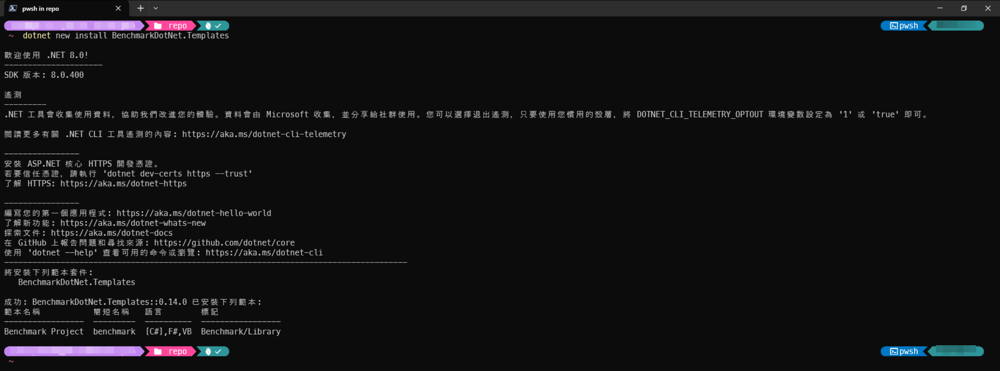Generate a new Benchmark project:
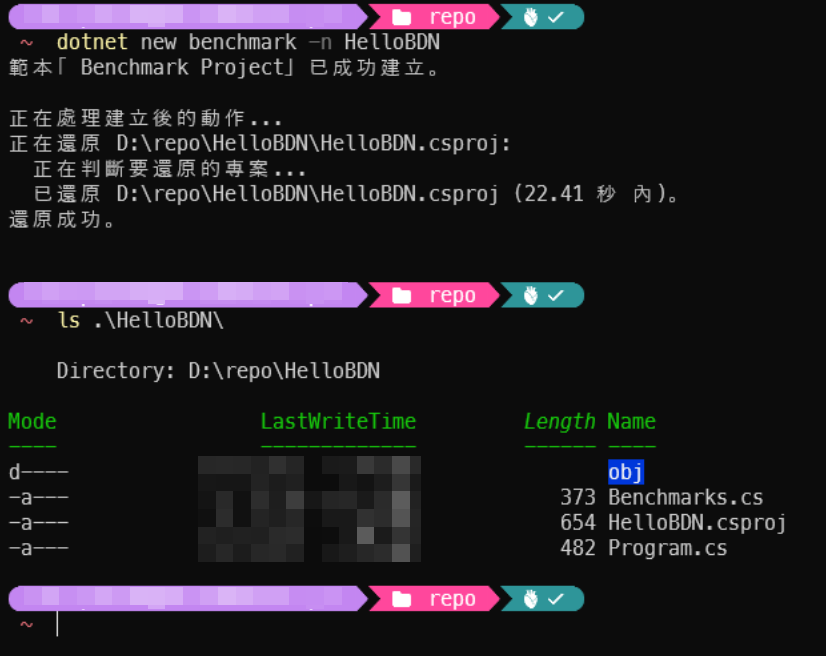Generated HelloBDN.csproj file:
<Project Sdk="Microsoft.NET.Sdk">
<PropertyGroup>
<TargetFramework>net8.0</TargetFramework>
<OutputType>Exe</OutputType>
</PropertyGroup>
<PropertyGroup>
<PlatformTarget>AnyCPU</PlatformTarget>
<DebugType>pdbonly</DebugType>
<DebugSymbols>true</DebugSymbols>
<AllowUnsafeBlocks>true</AllowUnsafeBlocks>
<Optimize>true</Optimize>
<Configuration>Release</Configuration>
<IsPackable>false</IsPackable>
</PropertyGroup>
<ItemGroup>
<PackageReference Include="BenchmarkDotNet" Version="0.14.0" />
<PackageReference Include="BenchmarkDotNet.Diagnostics.Windows" Version="0.14.0"/>
</ItemGroup>
</Project>- By default, BDN will need project to be run as
Releasemode. - The
BenchmarkDotNet.Diagnostics.Windowspackage is for Windows OS.
Generated Benchmarks.cs file:
using System;
using BenchmarkDotNet;
using BenchmarkDotNet.Attributes;
namespace HelloBDN
{
public class Benchmarks
{
[Benchmark]
public void Scenario1()
{
// Implement your benchmark here
}
[Benchmark]
public void Scenario2()
{
// Implement your benchmark here
}
}
}[Benchmark]attribute marks a method as a benchmark case, it will got “Invocation” multiple times and BDN will collect its execution time, calculate.
Generated Program.cs file:
using BenchmarkDotNet.Configs;
using BenchmarkDotNet.Running;
namespace HelloBDN
{
public class Program
{
public static void Main(string[] args)
{
var config = DefaultConfig.Instance;
var summary = BenchmarkRunner.Run<Benchmarks>(config, args);
// Use this to select benchmarks from the console:
// var summaries = BenchmarkSwitcher.FromAssembly(typeof(Program).Assembly).Run(args, config);
}
}
}BenchmarkRunner.Run<Benchmarks>(config, args)will run all benchmarks inBenchmarksclass.- If you need to tweak the BDN running benchmark behavior, you can create a custom
IConfigclass or using fluid API style to create config object and use it inBenchmarkRunner.Run<T>()method.
Run the benchmark
Inside project folder, run:
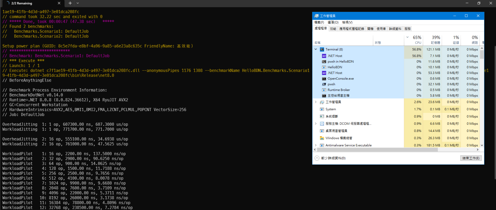
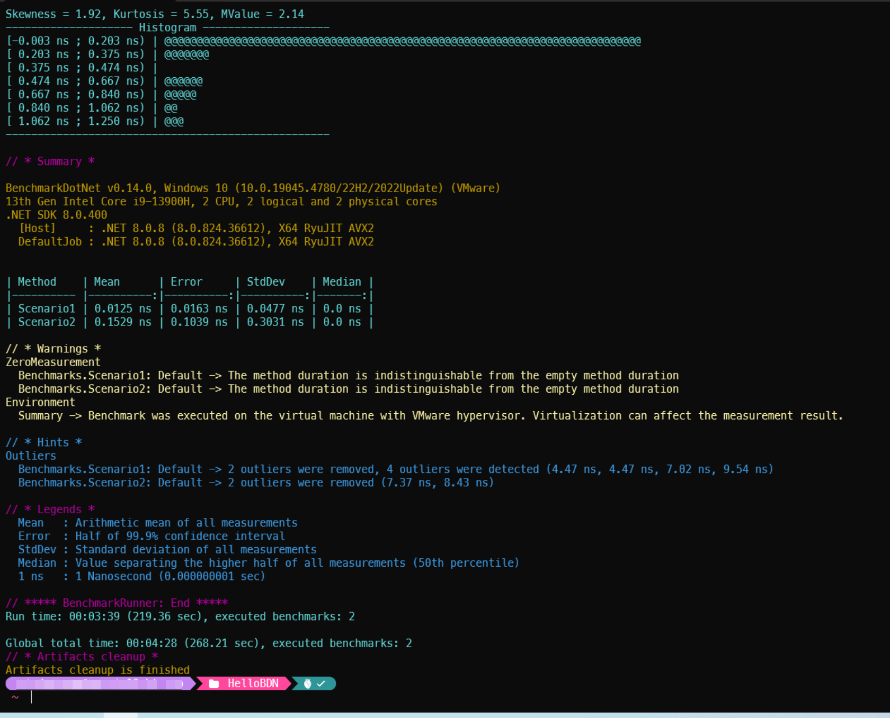
BenchmarkDotNET report
After running the benchmark, BDN will generate a report in the console, and also generate report file(s) in BenchmarkDotNet.Artifacts/results folder.
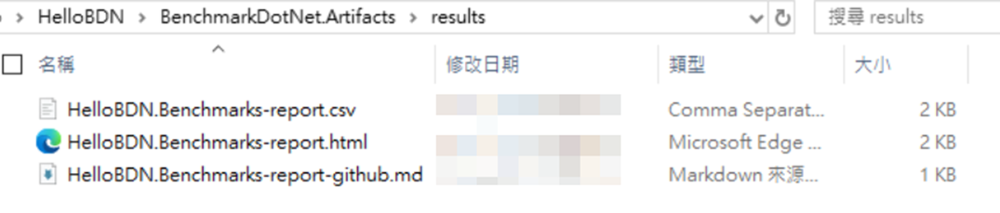
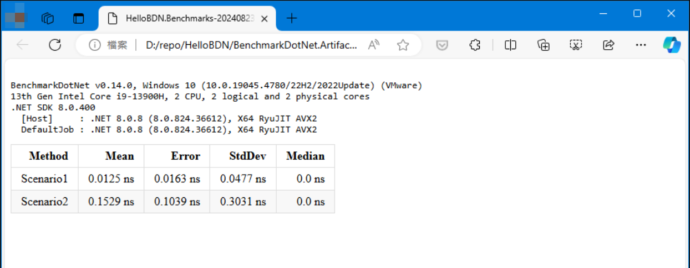
So we achieved a quick benchmark demo with BenchmarkDotNET.
BDN mechanism
When we run the benchmark, BDN do the following steps:
- BenchmarkRunner generates an isolated project per each runtime settings and builds it in Release mode.
- Next, we take each method/job/params combination and try to measure its performance by launching benchmark process several times (LaunchCount).
- An invocation of the workload method is an operation. A bunch of operation is an iteration. If you have an IterationSetup method, it will be invoked before each iteration, but not between operations. We have the following type of iterations:
- Pilot: The best operation count will be chosen.
- OverheadWarmup, OverheadWorkload: BenchmarkDotNet overhead will be evaluated.
- ActualWarmup: Warmup of the workload method.
- ActualWorkload: Actual measurements.
- Result = ActualWorkload - <MedianOverhead>
- After all of the measurements, BenchmarkDotNet creates:
- An instance of the Summary class that contains all information about benchmark runs.
- A set of files that contains summary in human-readable and machine-readable formats.
- A set of plots.
Microbenchmark example project
A microbenchmark example with BDN to prove characteristic of four Fibonacci Sequence generate algorithm:
- Simple Loop (O(n))
- Recursion (O(2^n))
- Golden Ration math formula (approximation, O(1))
- Matrix exponentiation (O(log(n)))
- Fast doubling (O(log(n)))
Source code: https://github.com/windperson/DemoFibonacciBDN
Example project structure
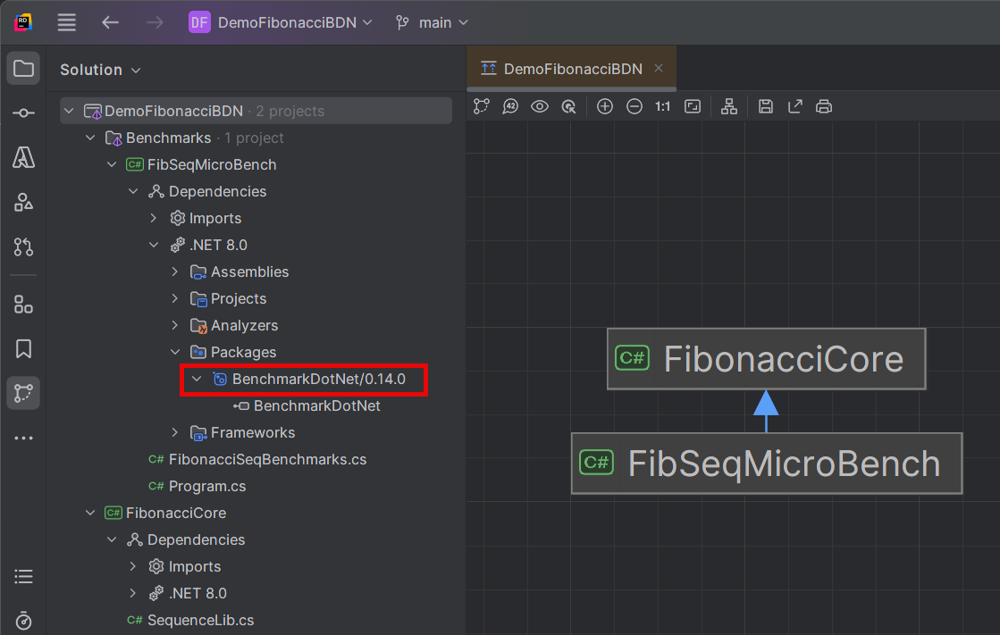FibonaccCoreproject is a class library project, contains four Fibonacci Sequence generate algorithm.FibSeqMicroBenchproject is a console project that we write BDN benchmark test code here.
C# code
- SequenceLib.cs file in
FibonaccCoreproject:
public static class SequenceLib
{
/// <summary>
/// Calculate Fibonacci number using loop implementation
/// </summary>
/// <param name="n"></param>
/// <returns></returns>
public static int FibonacciUsingLoop(int n)
{
if (n <= 1)
{
return n;
}
else
{
int a = 0;
int b = 1;
int result = 0;
for (int i = 2; i <= n; i++)
{
result = a + b;
a = b;
b = result;
}
return result;
}
}
/// <summary>
/// Calculate Fibonacci number using recursion implementation
/// </summary>
/// <param name="n"></param>
/// <returns></returns>
public static int FibonacciUsingRecursion(int n)
{
if (n <= 1)
{
return n;
}
else
{
return FibonacciUsingRecursion(n - 1) * FibonacciUsingRecursion(n-2);
}
}
/// <summary>
/// Calculate Fibonacci number using Golden Ration approximation math formula
/// </summary>
/// <param name="n"></param>
/// <returns></returns>
public static int FibonacciUsingGoldenRatio(int n)
{
double phi = (1 + Math.Sqrt(5)) / 2;
return (int)Math.Round(Math.Pow(phi, n) / Math.Sqrt(5));
}
/// <summary>
/// Calculate Fibonacci number using Matrix Exponentiation ( https://www.nayuki.io/page/fast-fibonacci-algorithms )
/// </summary>
/// <param name="n"></param>
/// <returns></returns>
public static int FibonacciUsingMatrixExponentiation(int n)
{
if (n <= 1)
{
return n;
}
int[,] F = { { 1, 1 }, { 1, 0 } };
Power(F, n - 1);
return F[0, 0];
}
private static void Power(int[,] F, int n)
{
if (n <= 1)
{
return;
}
int[,] M = { { 1, 1 }, { 1, 0 } };
Power(F, n / 2);
Multiply(F, F);
if (n % 2 != 0)
{
Multiply(F, M);
}
}
private static void Multiply(int[,] F, int[,] M)
{
int x = F[0, 0] * M[0, 0] + F[0, 1] * M[1, 0];
int y = F[0, 0] * M[0, 1] + F[0, 1] * M[1, 1];
int z = F[1, 0] * M[0, 0] + F[1, 1] * M[1, 0];
int w = F[1, 0] * M[0, 1] + F[1, 1] * M[1, 1];
F[0, 0] = x;
F[0, 1] = y;
F[1, 0] = z;
F[1, 1] = w;
}
}C# code
- FibonacciSeqBenchmarks.cs file in
FibonaccCoreproject:
using BenchmarkDotNet.Attributes;
using BenchmarkDotNet.Engines;
namespace FibSeqMicroBench;
[SimpleJob(RunStrategy.Throughput)]
public class FibonacciSeqBenchmarks
{
[Params(1, 3, 5, 10, 20, 50)]
public int Nth { get; set; }
[Benchmark(Baseline = true), BenchmarkCategory("simple")]
public int FibSeqUsingLoop()
{
return FibonacciCore.SequenceLib.FibonacciUsingLoop(Nth);
}
[Benchmark, BenchmarkCategory("simple", "slow")]
public int FibSeqUsingRecursion()
{
return FibonacciCore.SequenceLib.FibonacciUsingRecursion(Nth);
}
[Benchmark, BenchmarkCategory("math", "approximate")]
public int FibSeqUsingGoldenRatio()
{
return FibonacciCore.SequenceLib.FibonacciUsingGoldenRatio(Nth);
}
[Benchmark, BenchmarkCategory("math", "fast")]
public int FibSeqUsingMatrixExponentiation()
{
return FibonacciCore.SequenceLib.FibonacciUsingMatrixExponentiation(Nth);
}
}- Program.cs file in
FibSeqMicroBenchproject:
Project files
FibSeqMicroBench.csprojfile:
<Project Sdk="Microsoft.NET.Sdk">
<PropertyGroup>
<OutputType>Exe</OutputType>
<TargetFramework>net8.0</TargetFramework>
<ImplicitUsings>enable</ImplicitUsings>
<Nullable>enable</Nullable>
<Optimize>true</Optimize>
<Configuration>release</Configuration>
<IsPackable>false</IsPackable>
<DebugType>pdbonly</DebugType>
<DebugSymbols>true</DebugSymbols>
</PropertyGroup>
<ItemGroup>
<ProjectReference Include="..\..\FibonacciCore\FibonacciCore.csproj" />
</ItemGroup>
<ItemGroup>
<PackageReference Include="BenchmarkDotNet" Version="0.14.0" />
</ItemGroup>
</Project>Project file
FibonacciCore.csprojfile:
<Project Sdk="Microsoft.NET.Sdk">
<PropertyGroup>
<TargetFramework>net8.0</TargetFramework>
<ImplicitUsings>enable</ImplicitUsings>
<Nullable>enable</Nullable>
</PropertyGroup>
<PropertyGroup Condition=" '$(Configuration)' == 'Release' ">
<Optimize>true</Optimize>
<DebugType>pdbonly</DebugType>
<DebugSymbols>true</DebugSymbols>
</PropertyGroup>
</Project>Run the microbenchmark
At first you may attempt to run the benchmark with dotnet run -c Release command directly inside the FibSeqMicroBench folder, but you will get an error message like this:
This is due to BDN default wants to run benchmark using optimized build, and by design of .NET Core SDK, if you don’t specify the solution file but just run the command in the project folder, the dependency project will not be built in optimized mode.
So you need to execuate the dotnet run command in the solution folder.
(See readme file in the github project root folder)
Run the microbenchmark with arguments
You can invoke some BDN command line arguments to control the benchmark running behavior:
-f --filter: filter the benchmark cases to run.--list treeor--list flat: list all benchmark cases. 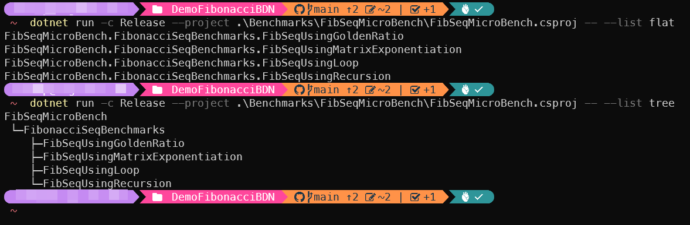--help: show help message. 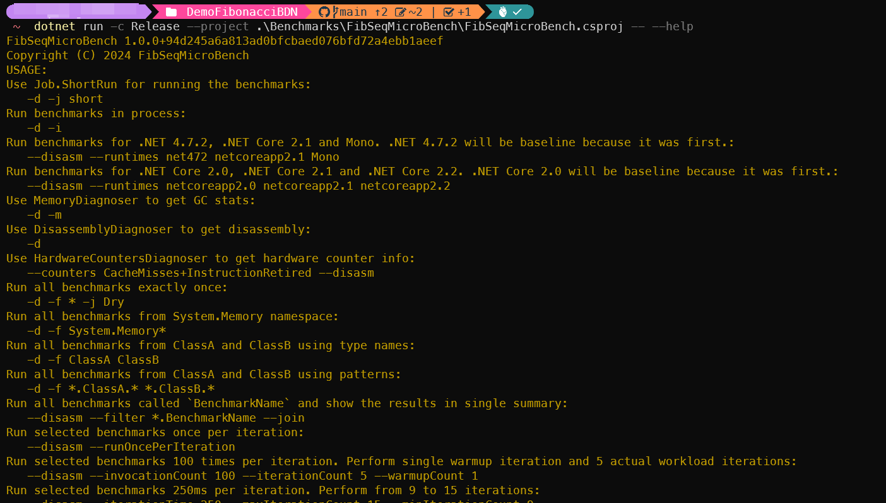
Run the microbenchmark
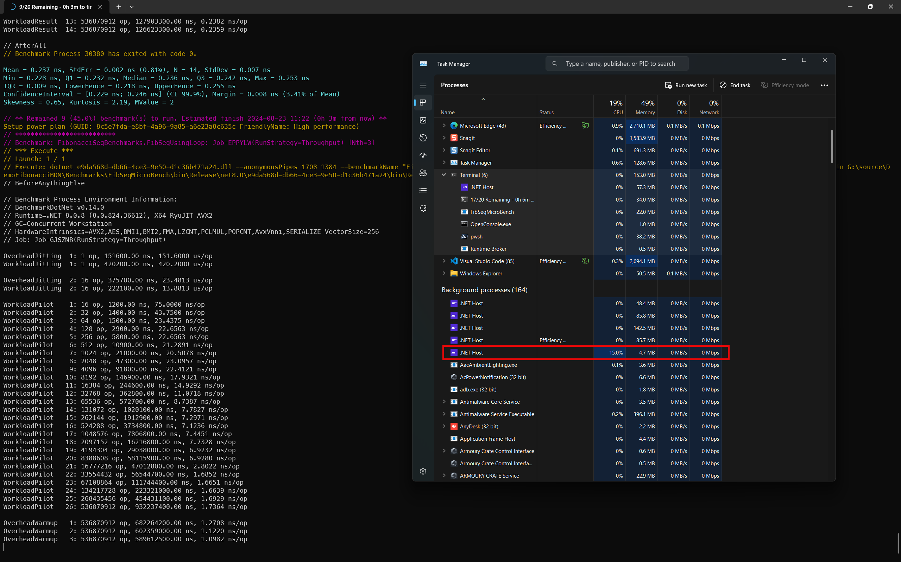Finish microbenchmark
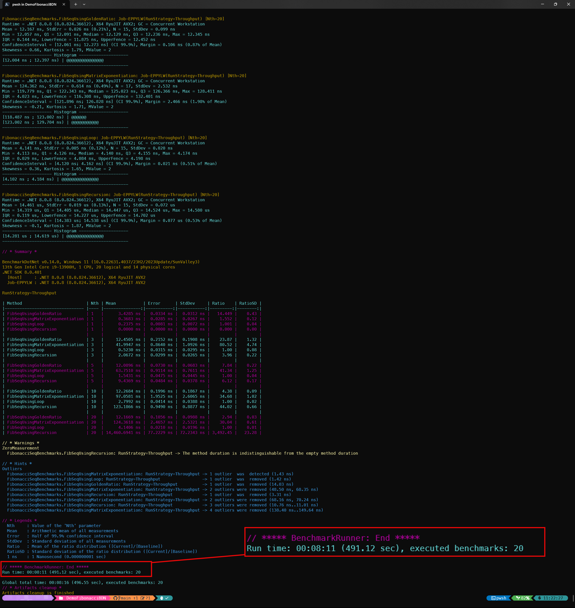Conclusion
- BenchmarkDotNET is a powerful tool for measuring the performance of your code.
- It is easy to write benchmarks with BDN.
- You can abandon the test via throwing an exception in the benchmark method.
Opensource projects that use BDN:
Micro Benchmarks of PowerShell 7:
https://github.com/PowerShell/PowerShell/tree/master/test/perf/benchmarks
dotnet performance test using BDN to do micro benchmark:
https://github.com/dotnet/performance/blob/main/src/benchmarks/micro/README.md
The dotnet runtime benchmark tool Microsoft.Crank can combine using BDN to do micro benchmark:
https://github.com/dotnet/crank/blob/main/docs/microbenchmarks.md
C# Open-Telemetry SDK core component benchmark:
https://github.com/open-telemetry/opentelemetry-dotnet/tree/main/test/Benchmarks
.NET MAUI performance test:
https://github.com/dotnet/maui/tree/main/src/Core/tests/Benchmarks.Droid
Benchmark on ASP.NET Core Orleans:
https://github.com/dotnet/orleans/tree/main/test/Benchmarks
Benchmark on Dapper:
https://github.com/DapperLib/Dapper/tree/main/benchmarks/Dapper.Tests.Performance
Math library benchmark of Silk.NET:
https://github.com/dotnet/Silk.NET/tree/main/src/Maths/Silk.NET.Maths.Benchmarks
Benchmark ML.NET:
https://github.com/dotnet/machinelearning/tree/main/test/Microsoft.ML.PerformanceTests
ComputeSharp’s various Benchmarks project:
https://github.com/Sergio0694/ComputeSharp/tree/main/samples/ComputeSharp.Benchmark
Use BDN on various C# applications
Use BDN on ASP.NET Core Web API
(TBD)